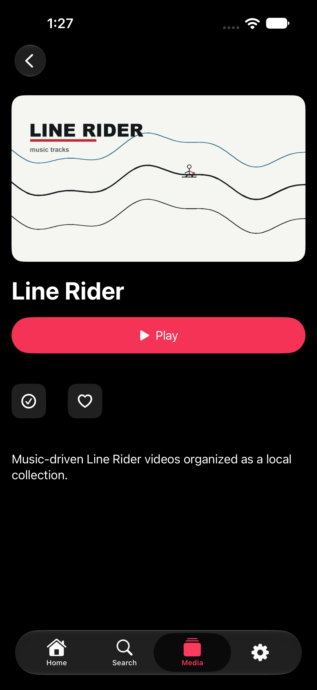
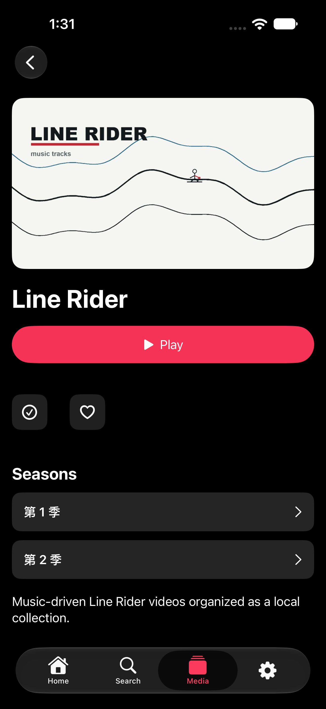

Show → season → episode → playback
October 29, 2026. The original Line Rider detail screen showed Play and the overview but no seasons. A live-server UI test reproduced the missing season list before the fix.
The old season preview was empty until episodes loaded, while episode loading depended on that preview appearing inside a lazy stack. Explicit season buttons now render before episode loading, above cast and overview. Each opens its own episode library, which handles loading and retry through the existing library view.
Before and after · iPhone 17 Pro Max / iOS 27

Before: no season list, even after scrolling.
After: both seasons are visible and tappable.Verification
The real server returned 44 episodes in Season 1 and 33 in Season 2. On both iPhone 17 Pro Max and iPad Pro 13-inch (M5), OS 27, the automated test opened both seasons, verified multiple episode entries, selected Season 2 Episode 2, confirmed its item ID and advancing playback position through the server session, and returned to the episode list.
Four final UI test executions passed: the complete series flow and the navigation/settings/diagnostics flow on each device. Live TV was absent. The baseline season test failed before the fix; the intermediate visibility test passed after it. Independent code review found no blocking issues.
Scope: simulator tests against the real server; not physical-device certification or exhaustive playback of all 77 episodes. The account was non-administrative with deletion disabled. No deletion or permission change was performed. This patch is not yet in TestFlight.
iphone
ipad